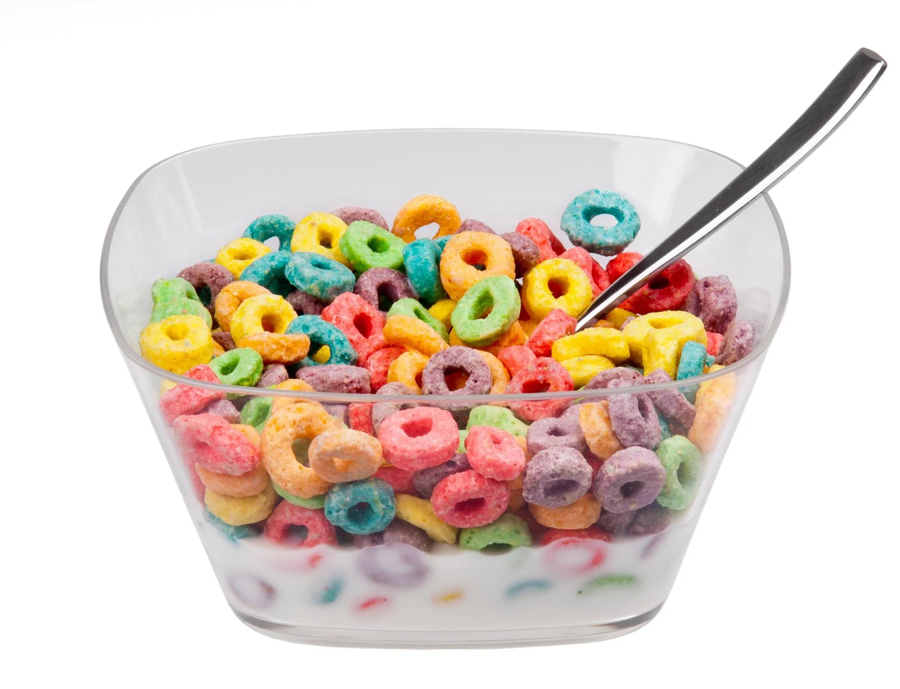

Cereal Recipe

Description
What to eat for breakfast? It's hard to decide. What about a simple bowl of cereal and milk?
But how does one make cereal and milk? Well, you've come to the right place.
Ingredients
- cereal of your choice
- milk of your choice
Equipment
Steps
- Pour cereal into your bowl
- Pour milk over your cereal until the milk reaches the top of the cereal
- Put spoon in bowl
- Have fun and enjoy!